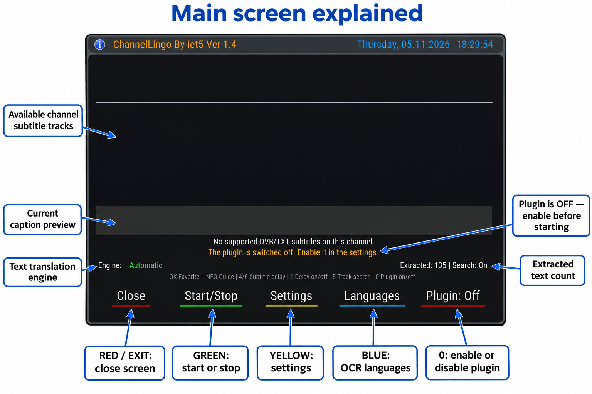
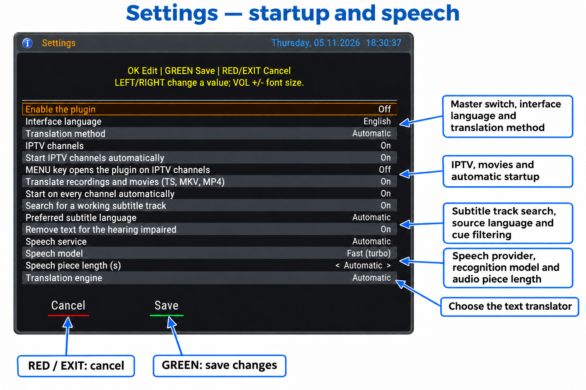
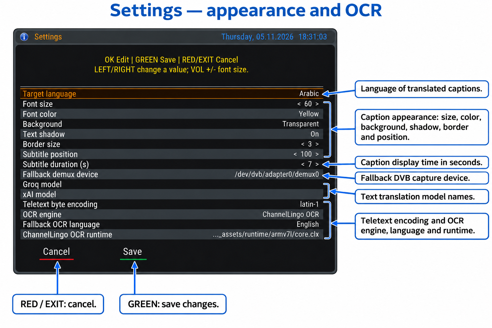
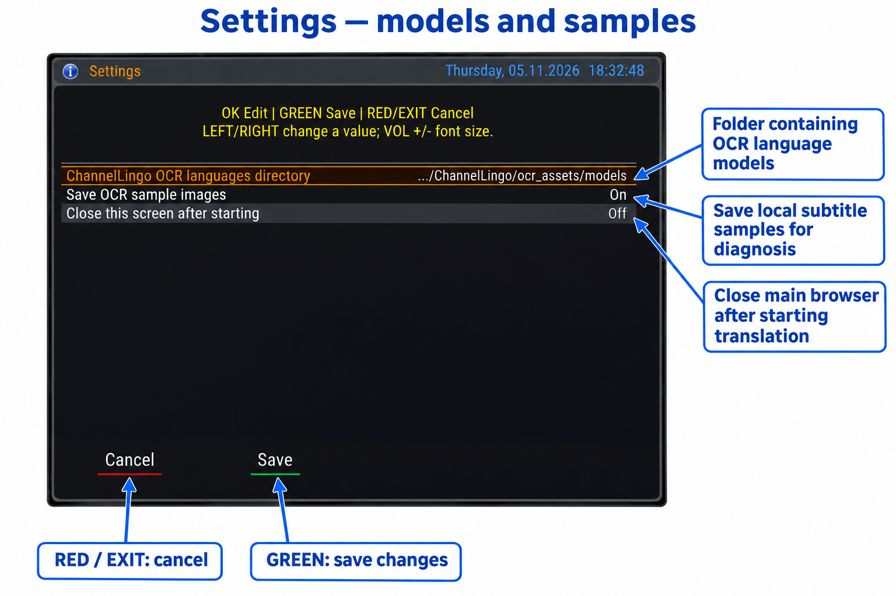

Plugin created and developed by iet5
Version 1.4 • Screenshots dated 5 November 2026
A practical guide to translating live channels, IPTV, recordings, and movies on Enigma2, covering the current settings, remote-control keys, speech services, and OCR.
Prepared from the current source files and the user’s recent screenshots. Screenshots show the user’s saved choices, which may differ from defaults. No plugin files were changed to prepare this guide.
Annotated PNG screenshots include explanatory labels and arrows directly within each image. The original source screenshots remain separately available. Numbered setting explanations follow the rows from top to bottom. No language-manager or running-translation screenshot was supplied; those functions are documented in text without invented images.
How to use this manual
Start with Quick start, then read each screenshot and its following explanation table. Use Word’s Navigation Pane to jump between headings. API setup, troubleshooting, and service references follow the screen guide.
1. Overview and requirements
ChannelLingo extracts channel subtitle text or recognizes speech from audio, translates the text, and displays captions over the TV picture. It does not replace the channel audio. Setting the translation engine to Off lets you view extracted source text.
Subtitle path: DVB bitmap captions are read by local OCR; Teletext captions are decoded as text. This path applies to supported live satellite, terrestrial, and cable channels. A listed track does not guarantee continuous subtitle data.
Speech path: short audio pieces are sent to a recognition service, then the recognized text is translated. Use it for live channels without usable subtitles and compatible IPTV or local media.
Use an Enigma2 receiver and a package matching its CPU, Python runtime, and image. The source includes DreamOS/Python 2.7 and OpenATV/Python 3.14 compatibility paths; this does not guarantee every receiver/image combination. Rendering and key handling depend on the receiver environment.
Internet access is required for text translation, speech recognition, and OCR model downloads. Bitmap OCR itself runs locally once the engine and model are present. Speech needs a valid API key. Google and MyMemory do not require a plugin key file in the current configuration.
Supported receivers and compatibility
Important clarification regarding compatibility with different receivers
I would like to clarify that I developed ChannelLingo with a primary focus on VU+ and Dreambox receivers, as these are the devices I own and have been able to test directly to verify that the plugin works correctly.
Unfortunately, I do not own receivers from other brands, so I cannot test the plugin on them or become familiar with their specific operation and differences.
Therefore, I kindly ask users of other receivers to understand that my ability to provide technical support or resolve device-specific issues will be very limited, because I do not have the hardware needed to test and verify possible fixes.
Of course, you are welcome to try the plugin on other receivers, and I will be happy to hear when it works for you. However, I cannot guarantee full compatibility. If you encounter problems that prevent the plugin from working correctly, you can simply uninstall it and stop using it.
I kindly ask everyone to understand that I develop this plugin as a personal effort, within the limits of the equipment and resources available to me.
I sincerely thank everyone who tests the plugin and shares helpful feedback that contributes to its development and improvement.
With my sincere regards, appreciation, and respect to everyone.
Installation and updates
Use the version 1.4 package appropriate to your receiver and follow its installation instructions. The receiver plugin path is /usr/lib/enigma2/python/Plugins/Extensions/ChannelLingo. Before updating, back up settings, keys, and extra OCR models, then restart the Enigma2 GUI as directed by the package. Do not infer package architecture from the receiver brand alone. No installation command is specified for an unspecified package.
2. First-use quick start
1. Tune to a channel or play supported media. Open ChannelLingo from Plugins or its main-menu entry. An Extensions-menu entry may also be available, depending on the receiver image.
2. Press YELLOW for Settings. Set Enable the plugin to On. Choose the interface language and your desired Target language, for example Arabic.
3. Start with Automatic for both translation method and engine, and enable working-track search. For speech, prepare at least one service key file as described in the API chapter.
4. Press GREEN inside Settings to save. In the main browser, press GREEN to start. If the plugin is disabled, enable it with 0 first.
5. For channel subtitles, select a suitable track with the arrows. The green mark suggests a ready track; wait for actual dialogue. Use OK to save or remove the favorite track.
6. Close the browser with RED or EXIT to watch with background captions. To stop, press GREEN in the browser or hold EXIT/BACK if the receiver supports the global binding.
Two practical examples
French channel with DVB captions: choose Arabic as target, French as preferred source track if desired, and built-in OCR with a French model. Fallback OCR describes the source bitmap language; it should not be Arabic merely because Arabic is the target.
Channel without subtitles or IPTV: select Automatic or Speech, enable IPTV support where relevant, and install a speech-service key. Cloudflare can recognize audio while Google translates the text; the speech provider and translator need not be the same company.
3. Main browser explained

Figure 1 — English main browser: 1_Annotated.png
The screenshot shows the plugin switched off and an empty track list. This does not rule out speech translation: enable the plugin, choose a suitable method, and provide a speech key when needed. The visible 135 counter is not proof that translation was active when the screenshot was taken.
Reading the main browser
| No. | Area | Explanation |
|---|---|---|
| 1 | Top track list | Source subtitle tracks reported by the receiver. PID identifies the stream; DVB is bitmap and TXT is Teletext. Ready indicates reader readiness, not actual incoming dialogue. > marks the receiver-active track and * a saved track. |
| 2 | Gray caption bar | Shows the current caption inside the browser. Captions appear over the TV picture after closing the menu. On OpenATV layouts, the external overlay may be suspended while menus are open to avoid covering them. |
| 3 | Selected source row | Identifies PID, language, and track type, or speech from DVB, IPTV, or a recording/movie. No supported DVB/TXT subtitles describes the track list; it is not an internet diagnosis. |
| 4 | Status row | Shows running, listening, searching, stopped, or an error. In this screenshot, startup is blocked because the plugin is disabled. Read this row before changing advanced settings. |
| 5 | Engine and counter | Shows the engine or automatic choice; speech mode can also show its active service. Extracted counts extracted text items. Search indicates track-search state; Delay is the extra delay when configured. |
| 6 | Shortcut hint row | Reminds you of OK, INFO, 4/6, 1, 5, and 0. These shortcuts apply in the browser; other screens have their own mappings. |
| 7 | Bottom buttons | Close, Start/Stop, Settings, and Languages. The Plugin indicator changes color/state and is toggled with 0; it is not a fifth colored remote-control key. |
4. Remote controls and channel memory
| Key | Action |
|---|---|
| RED / EXIT | Closes the browser while an active translation continues. |
| GREEN | Start/stop in the browser; save in Settings; download in OCR Languages. |
| YELLOW / MENU | Open Settings from the browser, subject to the optional IPTV MENU toggle described later. |
| BLUE | Manage OCR models; this does not select the target language. |
| OK | Save/remove the selected channel subtitle favorite. In Settings: edit or select a value. |
| INFO | Open the built-in plugin user guide. |
| 4 / 6 | Decrease/increase extra caption delay by 0.5 seconds within 0–30 seconds. |
| 1 | Enable/disable the saved extra delay without discarding its value. |
| 5 | Toggle working subtitle-track search. |
| 0 | Toggle the plugin master switch. |
| Hold EXIT / BACK | Stop background translation and remember this channel as stopped, where the image supports the global binding. |
| VOL + / − | In Settings only: adjust caption font size instead of audio volume. |
The plugin remembers working tracks and channel choices such as delay and explicit stop state. A channel may therefore remain stopped even with automatic startup enabled: open it and press GREEN to restart. Closing with RED differs from stopping with GREEN and disabling globally with 0.
If text already arrives late, adding delay will not advance it. Reduce extra delay to zero or switch it off with 1. Audio collection and cloud processing take time; the plugin does not provide negative extra delay.
5.1 Settings — screen 1

Figure 2 — Settings screen 1: 2_Annotated.png
Use UP/DOWN to select a row and LEFT/RIGHT to change a selectable value, or OK to choose/edit it. Numeric controls step through values; OK increments and wraps at the limit. GREEN saves; RED/EXIT cancels. The following explanations match the screenshot row order.
Screen 1 settings — rows 1 to 8
| Row | Setting | Purpose and use |
|---|---|---|
| 1 | Enable the plugin | The master switch must be On before GREEN can start translation. Press 0 in the main screen to toggle it. Off also prevents automatic translation. |
| 2 | Interface language | Choose Receiver language, Arabic, or English. Changes preview immediately; GREEN saves and RED/EXIT restores the saved language. This does not set the caption target language. |
| 3 | Translation method | Automatic tries usable channel subtitles, then speech when needed. Channel subtitles uses live DVB/TXT tracks. Speech recognizes audio and translates the resulting text; a speech-service API key is required. |
| 4 | IPTV channels | Allows speech translation of compatible IPTV channels. Use Automatic or Speech as the method. Off blocks IPTV speech translation even when started manually. |
| 5 | Start IPTV channels automatically | Allows automatic IPTV startup when IPTV support is enabled. General automatic-start settings and channel history also apply. A channel explicitly stopped stays stopped until restarted. A channel previously saved for speech can resume even with this option Off. |
| 6 | MENU key opens the plugin on IPTV channels | Optional shortcut while watching IPTV with the normal TV information screen active. MENU opens the plugin and a second press closes it. Other open menus keep their own key behavior. |
| 7 | Translate recordings and movies (TS, MKV, MP4) | Allows speech translation of a currently playing local TS, MKV, or MP4 file. It does not export subtitles or create a translated movie. A readable audio track and working speech service are required. |
| 8 | Start on every channel automatically | Starts translation after a channel change when the plugin is enabled. Off prevents general startup on new channels but does not erase saved channel behavior. An explicit stop is remembered until that channel is restarted. |
Screen 1 settings — rows 9 to 15
| Row | Setting | Purpose and use |
|---|---|---|
| 9 | Search for a working subtitle track | Tries alternative subtitle tracks when no text arrives, then stays with a track that delivers real subtitles. Press 5 in the main screen to toggle it. Off keeps the selected track and can prevent completion of automatic track searching. |
| 10 | Preferred subtitle language | Preferred source subtitle-track language, not the output language. Automatic favors a language different from the target when possible. A track saved for this channel takes priority. |
| 11 | Remove text for the hearing impaired | Filters hearing-impaired descriptions such as [music] or [laughter]. Turn it Off if you need those cues. Filtering depends on text patterns and may not remove every description. |
| 12 | Speech service | Automatic, GroqCloud, xAI Grok, or Cloudflare Workers AI. Automatic tries available keyed services in the order Groq, xAI, Cloudflare. This choice is separate from the text translation engine. |
| 13 | Speech model | Fast (turbo) or Accurate (large-v3). Selects the Groq speech-recognition model. Other providers use their configured service model or endpoint; this setting does not select every provider’s model. |
| 14 | Speech piece length (s) | Start with Automatic: the plugin chooses a length from the number of keys and adapts to limits. Shorter pieces reduce collection time and increase requests. Effective manual lengths are 2–10 seconds; 1 is treated as automatic by the current speech worker. |
| 15 | Translation engine | Automatic, Google, MyMemory, Groq, xAI, or Off. Off displays extracted source text. Automatic tries keyed Groq, then keyed xAI, then Google, and MyMemory when the source language is known. |
5.2 Settings — screen 2

Figure 3 — Settings screen 2: 3_Annotated.png
Use UP/DOWN to select a row and LEFT/RIGHT to change a selectable value, or OK to choose/edit it. Numeric controls step through values; OK increments and wraps at the limit. GREEN saves; RED/EXIT cancels. The following explanations match the screenshot row order.
Screen 2 settings — rows 1 to 8
| Row | Setting | Purpose and use |
|---|---|---|
| 1 | Target language | The language you want to read on screen, for example Arabic. It is independent of interface language, preferred source-track language, and fallback OCR language. |
| 2 | Font size | Range 20–100 in steps of 4. The screenshot shows 60; the default is 40. In Settings, VOL +/− changes this value regardless of the selected row. Rendering scales with screen resolution. |
| 3 | Font color | White, yellow, green, cyan, orange, red, magenta, brown, blue, or black. The screenshot uses yellow; the default is white. Choose a readable combination with the background. |
| 4 | Background | Transparent, semi-transparent, or black. Transparent draws no caption box. A black background can improve readability over bright scenes. |
| 5 | Text shadow | Adds a text shadow to aid readability. The effect depends on the drawing capabilities provided by the receiver image. |
| 6 | Border size | Range 0–10 in steps of 1; the default is 3, as shown. Zero removes the border. Application depends on receiver support. |
| 7 | Subtitle position | Range 0–500 in steps of 10. Increasing it moves captions upward from the bottom. The screenshot shows 100 and the default is 90. This is a position, not a time delay. |
| 8 | Subtitle duration (s) | Range 1–30; default 7. Controls the configured display duration; a source cue may be shorter or replaced by a newer caption. It does not control processing delay or audio-piece length. |
Screen 2 settings — rows 9 to 15
| Row | Setting | Purpose and use |
|---|---|---|
| 9 | Fallback demux device | Used for DVB capture when the active demux cannot be detected automatically. Default: /dev/dvb/adapter0/demux0. Leave unchanged unless you know the correct device path. |
| 10 | Groq model | Text translation model name for Groq, not the speech model. Leave blank for automatic selection from models available to the account. An invalid or unavailable model name can cause refusal. |
| 11 | xAI model | Text translation model name for xAI. Leave blank for automatic selection. This field does not select the speech-recognition model used by the xAI audio endpoint. |
| 12 | Teletext byte encoding | Fallback byte encoding for Teletext, default latin-1. It affects decoding of source characters, not the requested output language. Change only for a known encoding issue. |
| 13 | OCR engine | ChannelLingo OCR, learned font templates, or learned fonts followed by ChannelLingo OCR. Templates depend on a matching channel font. The built-in OCR is a practical starting point for general use. |
| 14 | Fallback OCR language | Language of the source subtitle bitmap when the track does not identify it adequately. Use English for English bitmaps even when the target is Arabic. Its OCR model must be available. |
| 15 | ChannelLingo OCR runtime | The core.clx runtime appropriate for the receiver CPU. The screenshot shows armv7l. The current source includes ARMv7 and AArch64 assets. Do not copy the screenshot path blindly to a different receiver. |
5.3 Settings — screen 3

Figure 4 — Settings screen 3: 4_Annotated.png
Use UP/DOWN to select a row and LEFT/RIGHT to change a selectable value, or OK to choose/edit it. Numeric controls step through values; OK increments and wraps at the limit. GREEN saves; RED/EXIT cancels. The following explanations match the screenshot row order.
Screen 3 settings — rows 1 to 3
| Row | Setting | Purpose and use |
|---|---|---|
| 1 | ChannelLingo OCR languages directory | Directory of bundled OCR models. The screenshot truncates the path, whose ending is ocr_assets/models. Keep the working path. Downloaded models are managed separately outside the plugin directory. |
| 2 | Save OCR sample images | Saves subtitle bitmap samples and OCR results locally in /tmp/ChannelLingo_samples. The screenshot shows On; the default is Off. Enable for diagnosis when needed, then disable. This is not video recording. |
| 3 | Close this screen after starting | Closes the main plugin browser roughly 3 seconds after a track start in the start path that supports it, while translation continues. It does not disable the plugin or refer to closing Settings. RED/EXIT can always close the browser manually. |
6. OCR language manager
Press BLUE in the main browser. Languages are listed with their model state: installed in green or not installed in red. These models recognize source bitmap text; they are not the complete list of translation target languages. No screenshot of this screen was included in the supplied recent images.
To add a missing model, select its language and press GREEN, then wait for completion. Internet access and writable storage are required. Keys 2–9 jump by the initial of the English language name using telephone-style letter groups. EXIT returns.
To remove an extra downloaded model, stop subtitle translation first, select the language, press RED, and confirm. Bundled models cannot be deleted from this screen. Installing a model does not automatically change the target language.
The current source includes 23 bundled models: Arabic, Bulgarian, Czech, Danish, German, Greek, English, Finnish, French, Croatian, Hungarian, Italian, Dutch, Norwegian, Polish, Portuguese, Romanian, Russian, Slovak, Slovenian, Spanish, Serbian, and Swedish. On your receiver, use the language manager’s installed state as the practical check.
Extra models are stored in /etc/enigma2/channellingo-models outside the plugin directory so replacing plugin files can preserve them. For OCR not ready, check the required model and CPU-compatible runtime before changing paths.
7. Speech and translation API keys
Create plain UTF-8 text files under /etc/enigma2 on the receiver. These are receiver paths, not the Windows screenshot folder. Examples are placeholders: replace them with your own valid values and avoid an extra .txt extension after .key.
GroqCloud: sign in at console.groq.com, open API Keys, and create a key. Save it when displayed. Store it in /etc/enigma2/groqapi.key, for example gsk_YOUR_REAL_KEY. Select GroqCloud for speech or Groq for text translation, or leave both on Automatic.
Official Groq key setup: https://console.groq.com/docs/quickstart
xAI: sign in at console.x.ai, open API Keys, and create a key for the services you need. Put it in /etc/enigma2/xaiapi.key, for example xai-YOUR_REAL_KEY. Check account access, credits, and service availability; a key does not guarantee access to every model or endpoint.
Official xAI quickstart: https://docs.x.ai/developers/quickstart
Cloudflare Workers AI setup
1. Open your Cloudflare account, go to Workers AI, and select Use REST API.
2. Select Create a Workers AI API Token, review the prefilled permissions, create and copy the token, and copy the Account ID.
3. Save one line in /etc/enigma2/cloudflareapi.key as cf:ACCOUNT_ID:API_TOKEN, replacing both placeholders with the actual values.
4. Alternatively use the two labeled lines below. Then select Cloudflare Workers AI for Speech service, or leave it on Automatic.
Account ID : YOUR_ACCOUNT_ID API (Token): YOUR_API_TOKEN
Official Cloudflare guide: https://developers.cloudflare.com/workers-ai/get-started/rest-api/
In the current plugin, Cloudflare is a speech-recognition provider, not a separate text translation engine in the engine list. Choose a translation engine such as Automatic or Google for its recognized text.
Multiple keys and file permissions
Use one key per line to provide multiple keys; # starts a comment. The reader can identify services across the recognized files, but separate files are clearer. Rejected or limited keys can trigger alternatives depending on mode and provider. Multiple keys for one account do not necessarily increase its quota.
After creating each file, you can restrict it over SSH with the matching command below. Only run commands for files you actually created. Keep API keys and IPTV subscription credentials out of support screenshots.
chmod 600 /etc/enigma2/groqapi.key chmod 600 /etc/enigma2/xaiapi.key chmod 600 /etc/enigma2/cloudflareapi.key
8. IPTV, recordings, and movies
IPTV translation
1. Play an IPTV channel that works normally on the receiver. Enable IPTV channels, use Automatic or Speech, and prepare a speech-service key.
2. Try a manual GREEN start first. For automatic startup on new channels, also enable general automatic startup and the IPTV automatic option. If startup is skipped, check the channel’s remembered stop state.
3. Optionally enable the MENU shortcut. While watching, MENU opens/closes the browser. If MENU closes the browser when you want Settings, use YELLOW.
The plugin opens an additional connection to the IPTV source to read audio. Some subscriptions allow only one connection; if playback breaks when translation starts, check the subscription limit. Support depends on the player exposing an HTTP/HTTPS URL, readable stream/audio formats, and valid access; not every channel is guaranteed.
IPTV translation uses audio, not the live DVB/TXT track list or external SRT files. An empty track list can therefore coexist with working speech translation.
Local media translation
1. Play a TS recording or MKV/MP4 movie in the normal receiver player. Enable recordings/movies translation and choose Automatic or Speech.
2. Start translation. The plugin reads file audio, so the file path and an audio codec must be supported. The MKV/MP4 extension alone is insufficient: MPEG audio, AAC, and AC-3 are among supported paths; DTS, E-AC-3, and Opus are not supported by the current MKV reader.
3. If synchronization drifts after seeking or pausing, stop and restart translation at the current viewing point. The reader attempts to start near that point; accuracy depends on the file index and format. Do not assume seamless synchronization across every playback operation.
9. Engine choice, timing, and quality
Automatic is useful when several providers are available because it can try usable alternatives. A manual choice selects that service; choosing Google alone does not mean all text engines will be tried. The Groq speech model and Groq text translation model are separate settings.
For HTTP 429 or a request-limit message, allow the stated cooldown or use a working alternative. The plugin manages key/service waiting; repeatedly stopping and starting does not reset an account quota. Google may rate-limit requests without any missing API key being involved.
Start with automatic speech-piece length. Shorter pieces can improve responsiveness but increase requests; longer pieces reduce request frequency and increase audio collection time. The plugin adapts to limits, so practical timing can vary during use. Zero-delay translation is not guaranteed.
For DVB, use the source bitmap language and its OCR model. If source text is readable but translation is poor, try another translator. If the extracted text is already wrong, check OCR or encoding first. Translation engine Off can help isolate this stage.
Choose a readable font and background. If native receiver subtitles overlap translated captions, check the receiver’s own subtitle display setting. The plugin attempts to disable native subtitles when starting a DVB track, but behavior depends on the image.
10. Troubleshooting
| Symptom | What to check |
|---|---|
| Plugin Off | Enable it with 0 or in Settings, then press GREEN. The master Off state blocks startup. |
| Empty track list | The channel may not provide DVB/TXT. Use Automatic or Speech with a valid key. IPTV and local media use speech. |
| Ready but no captions | Wait for actual subtitled dialogue and enable track searching. Reader readiness does not mean the channel is sending text now. |
| OCR not ready | Check the source-language model with BLUE, CPU-compatible OCR runtime, and configured paths. |
| Speech needs an API key file | Check filename, extension, directory, contents, and read permissions. Use the matching provider key; Cloudflare needs both account and token. |
| 401 or 403 | Check key validity, service access, credits, and status text. Some 403 responses indicate exhausted credits rather than a missing file. |
| 429 / rate limit | Wait for the displayed cooldown, use Automatic with configured alternatives, or lengthen audio pieces. Check account quotas. |
| No readable audio | Confirm normal receiver audio. Try another supported audio track if available and check the file/stream codec. |
Playback and display problems
| Symptom | Suggested action |
|---|---|
| IPTV stops when translation starts | Check subscription connection limits, URL access, and audio. Translation opens another source connection; try a manual start. |
| Channel will not auto-start | Check master enable, automatic startup, IPTV/movie permissions, and the channel’s saved stop state. Restart with GREEN. |
| Captions are late | Zero the extra delay or disable it with 1. Check connectivity, provider, and speech-piece length. Pressing 6 adds more delay. |
| Captions disappear in menus | OpenATV may suspend the external overlay while menus are open. Close the menu to inspect normal viewing; the browser has its own caption bar. |
| Wrong characters or language | Separate target, source-track, and OCR languages. For Teletext, check encoding when appropriate; for speech, check the selected audio language and clarity. |
| MENU closes instead of opening Settings | With the IPTV MENU shortcut enabled, it toggles the browser. Use YELLOW for Settings. |
| GREEN cannot restart immediately | Previous requests may still be stopping. If the status says so, wait briefly and retry. |
| Movie extension supported but no translation | Check audio codec and local path. Select Automatic/Speech and enable movies. Container support does not cover every codec inside it. |
11. Files, support, and privacy
| Receiver path | Contents |
|---|---|
| /etc/enigma2/channellingo.json | Settings, channel choices, and delay. |
| /etc/enigma2/groqapi.key | Groq keys. |
| /etc/enigma2/xaiapi.key | xAI keys. |
| /etc/enigma2/cloudflareapi.key | Cloudflare account/token records. |
| /etc/enigma2/channellingo-models | Downloaded extra OCR models. |
| /tmp/ChannelLingo.log | Current diagnostic log; an earlier rotated log may use .old. |
| /tmp/ChannelLingo_samples | Temporary sample images when sample saving is enabled. |
For support, provide receiver model, image, Python version, ChannelLingo version, method, speech service, engine, channel/file type, and exact status message. Share a relevant log excerpt only after reviewing and removing API keys, credential-bearing IPTV URLs, and private details. Diagnostics can include service references.
OCR and sample saving are local, but translation services receive text and speech services receive audio pieces needed for recognition. Use accounts according to provider terms. Multiple keys do not imply free or unlimited service; quotas and costs can change.
Files under /tmp are temporary and may disappear after reboot; copy needed diagnostic material beforehand. Use the Settings screen and GREEN to save everyday changes rather than editing JSON during operation.